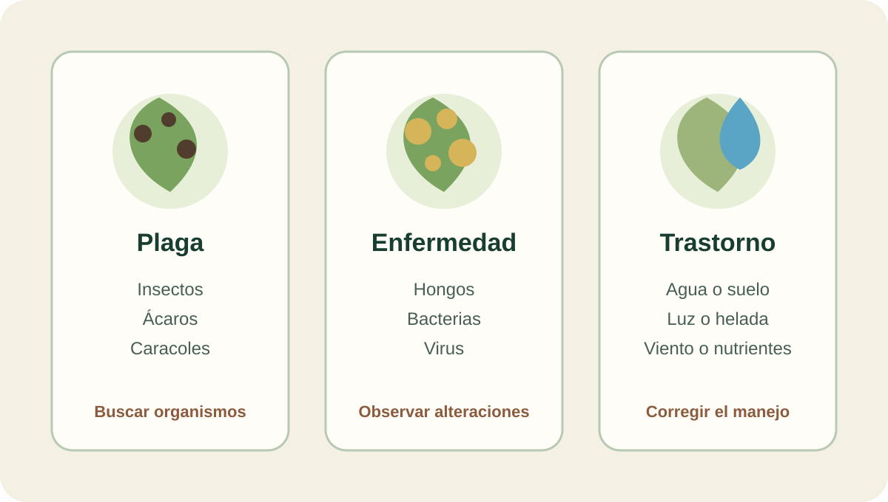

Módulo 11 · 20 minutos
Defender el cultivo sin arruinar la cosecha
Al terminar, vas a poder distinguir una plaga, una enfermedad y un trastorno, y registrar una intervención sin perder de vista la cosecha.
Una hoja dañada no trae un diagnóstico
El borde está mordido, otra hoja tiene manchas y una tercera se marchita aunque no aparecen insectos. Las tres plantas parecen pedir un producto, pero solo una observación ordenada puede decir si el problema es una plaga, una enfermedad o una condición de cultivo.
Responder antes de distinguirlas puede sumar un problema nuevo. En una planta destinada a cosecha, también importa cuánto tiempo debe pasar entre una aplicación y la recolección.
Tres caminos diferentes
Las incluyen insectos, ácaros y caracoles. Las pueden ser causadas por hongos, bacterias o virus.
Los tienen otro origen: exceso o falta de agua, suelo compacto, carencia de nutrientes, sombra excesiva, heladas o viento fuerte, seco, frío o salino. No se resuelven con un pesticida. Cada uno exige corregir su causa: modificar el riego, abonar, cambiar la ubicación o proteger la planta.

Seguí la causa, no solo el síntoma
Recorré las tres columnas. Una muestra organismos visibles, otra agentes que producen enfermedad y la tercera condiciones del ambiente o del manejo. ¿En cuál tendría sentido revisar primero el drenaje? ¿En cuál buscarías insectos o caracoles?
El número que protege la cosecha
Si una planta culinaria o aromática recibe un pesticida, debe respetarse el . Los días exactos se consultan en la etiqueta del producto.
El material establece como referencia una aplicación al menos una o dos semanas antes de recoger la planta, pero la decisión concreta depende de la etiqueta. La fecha de tratamiento y la fecha prevista de cosecha deben quedar unidas en el registro.
Se prefieren insecticidas biológicos frente a productos químicos, aunque en general los biológicos pueden ser menos eficaces para matar parásitos. Esta diferencia obliga a observar la evolución y no a suponer que una aplicación resolvió el problema.
Preparados vegetales registrados en el material
El ajenjo se prepara mediante : durante una semana se colocan 300 gramos de planta fresca o 30 gramos de planta seca en un litro de agua. Se pulveriza la planta cada quince días contra pulgones, ácaros, cochinillas y hormigas.
La ortiga fortalece y actúa como insecticida. Se prepara un fermentado con un kilogramo de planta fresca en diez litros de agua. Con 200 gramos de planta seca en diez litros, diluido, se emplea para estimular el crecimiento.
La manzanilla puede utilizarse en infusión o : 50 gramos en diez litros de agua para reforzar plantas contra enfermedades, tratar semillas y añadir al compost. La milenrama se presenta como larvicida mediante una infusión concentrada aplicada por pulverización.
Asociar para prevenir
Algunas plantas se colocan junto a otras como medida preventiva. La albahaca asociada al tomate repele la mosca blanca y protege los pimientos. La salvia repele la mariposa blanca de la col. El romero atrae insectos beneficiosos y sus hojas trituradas se emplean como repelente. La lavanda atrae a la crisopa y es una . La menta piperita aleja hormigas por su olor y, junto con albahaca, repele numerosos insectos.
Estas asociaciones actúan como prevención; no sustituyen el diagnóstico de un daño ya instalado.
Una advertencia que no admite atajos
El preparado de tabaco se describe como eficaz contra pulgones, mosca blanca, cochinillas y ácaros, pero también como altamente tóxico. Debe evitarse su inhalación. Que un preparado sea casero o provenga de una planta no lo vuelve automáticamente inocuo.
Actividad · Tres problemas, tres respuestas
Analizá estos casos:
- una maceta permanece encharcada y las raíces comienzan a pudrirse;
- aparecen pulgones y faltan varias semanas para la cosecha;
- una planta crece débil en sombra intensa.
Para cada uno indicá si es plaga, enfermedad o trastorno; qué respuesta corresponde; qué dato registrarías y, si hay un producto, dónde consultarías el plazo antes de cosechar.
La parcela llega a cosecha
El problema fue identificado, la intervención quedó registrada y el plazo se respetó. La planta puede cortarse, pero todavía no está lista para conservarse. Desde el momento de la cosecha, el agua que contiene se convierte en la variable principal.
Guardá esta estación
Cuando puedas explicar la idea central con tus propias palabras, marcá el módulo como completado.